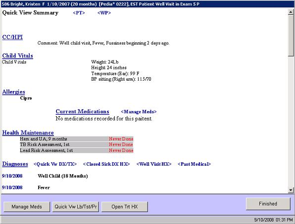

|
Description
Quick View screens are a workflow management tool that both tracks all treatments performed by clinical staff and allows for quick navigation to pre-ordered histories and the physical examination. Quick View is a 'hot' report that is it is hyperlinked to allow the provider to quickly access any of the underlying screens to review or enter information.
When you select the Quick View Service bar the Quick View Summary Report appears. You can perform many tasks from this screen, including:
- Review information -- today's information as well as open assessments, treatments, and labs/tests
- Update Open Assessments -- quickly add a progress note to any open assessment or close outdated assessments
- Review the Health Maintenance Rules status of the patient -- order any screenings for which the patient is overdue
- Update Open Labs/Tests -- access the results entry screen or close the lab
- Access the data entry screens for the pre-ordered histories and physical
 NOTE: If you do not want to work from the Quick View, you can accomplish all the tasks listed above from the Patient Chart. NOTE: If you do not want to work from the Quick View, you can accomplish all the tasks listed above from the Patient Chart.
How to Access This Screen
Access this screen by:
- Selecting one of the Quick View options from the Patient Chart menu (may need to select Other Items first)
- It can be displayed automatically as part of the provider workflow
Screen Example

Want to Learn More?
Related Solutions
Screen: Patient Chart
How to: Document an Encounter Using the Quick View Summary
How to: Document an Encounter from the Patient Chart
|